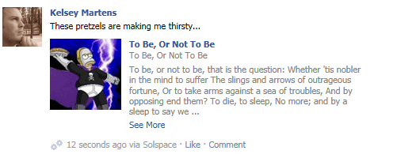

Publishing EE Content to Facebook
Solspace Facebook Connect allows your users to publish content to their Facebook profiles, providing they grant your site proper privileges. Privileges are set at first Facebook Login and/or afterwards using the Set Permissions on your site. Permissions can also be controlled (revoked) by the user in the Apps area in their Account Settings on Facebook site.
To determine which permissions have been set for the user, you can do so with the Permissions template tag. The specific setting you need to look at is publish_actions, which allows your users to publish data from your site onto their Facebook profile.
Facebook Connect currently allows your users to publish the following EE items onto Facebook:
You simply add a checkbox to the applicable submission form, allowing the user to ALSO publish the EE content they're submitting to their Facebook profile. Only text and an image can be sent - HTML and PHP are stripped. For EE Comments, if a given channel has been supplied with a search excerpt field in the channel settings, that field's contents will also be sent to Facebook.

Form Fields
The following form fields are available for use:
fbc_publish_to_facebook
<input
type="checkbox"
name="fbc_publish_to_facebook"
id="fbc_publish_to_facebook"
value="y"
/>
<label for="fbc_publish_to_facebook">
Also publish to my Facebook Profile?
</label>
Providing the user has granted Facebook publish_actions access to your site, when this checkbox is checked, upon form submit, the content will be posted to both your EE site, and the users Facebook profile.
fbc_image_attachment
<input
type="hidden"
name="fbc_image_attachment"
value="http://www.yoursite.com/images/photo.jpg"
/>
If you wish to send an image over to Facebook as well (with the comment, etc), this field should contain a reference to a URL of an image.
fbc_rating_comment_format
<input
type="hidden"
name="fbc_rating_comment_format"
value="I thought the quality of the food at this
restaurant was a {fbc_quality_of_food} out of 5."
/>
<input
type="hidden"
name="fbc_rating_comment_format"
value="I gave this {fbc_rating} out of 5 stars. {fbc_review}"
/>
This field is available to assist in formatting the display of the Solspace Rating review contents when published to Facebook. All of the Rating fields submitted by the user are available as variables with fbc_ as a prefix. No HTML is allowed.
Examples
Friends Status Form
The following example is how you would publish Solspace Friends add-on status updates to Facebook with your Friends Status Form:
<h3>Submit a new Status:</h3>
{exp:friends:status_form
return="friends/status"
}
<p>
{friends_screen_name}
<input type="text" name="friends_status" value="" />
<input type="submit" name="submit" value="Add" />
</p>
{exp:fbc:permissions}
{if fbc_allow_publish_actions == "y"}
<p>
<input
type="checkbox"
name="fbc_publish_to_facebook"
id="fbc_publish_to_facebook" value="y"
/>
<label for="fbc_publish_to_facebook">
Also Publish to my Facebook Profile
</label>
</p>
{if:else}
<p>
You currently don't have the correct permissions
set to allow publishing to your Facebook profile
from this site.
</p>
{/if}
{/exp:fbc:permissions}
{/exp:friends:status_form}
EE Comment Form
The following example is how you would publish entry comments to Facebook with your EE Comment Form:
<h3>Post a Comment</h3>
{exp:comment:form}
<p>
<textarea name="comment" cols="50" rows="6">{comment}</textarea>
</p>
<p>
<input type="checkbox" name="notify_me" value="yes" {notify_me} />
Notify me of follow-up comments?
</p>
{exp:fbc:permissions}
{if fbc_allow_publish_actions == "y"}
<p>
<input
type="checkbox"
name="fbc_publish_to_facebook"
id="fbc_publish_to_facebook"
value="y"
/>
<label for="fbc_publish_to_facebook">
Also Publish to my Facebook Profile
</label>
</p>
{if:else}
<p>
You currently don't have the correct permissions
set to allow publishing to your Facebook profile
from this site.
</p>
{/if}
{/exp:fbc:permissions}
<input type="submit" name="submit" value="Submit" />
{/exp:comment:form}
Rating Form
The following example is how you would publish Solspace Rating ratings/reviews to Facebook with your Rating form:
<h3>Submit a Rating for this Entry:</h3>
{exp:rating:form
entry_id="{segment_3}"
collection="Hotel Reviews"
return="rating/thanks"
}
<p>
<label for="rating">Your Rating:</label>
<select name="rating" id="rating">
<option value="1">1</option>
<option value="2">2</option>
<option value="3">3</option>
<option value="4">4</option>
<option value="5">5</option>
</select>
</p>
<p>
<label for="review">Your Review:</label><br />
<textarea name="review" id="review" rows="10" cols="40"></textarea>
</p>
{exp:fbc:permissions}
{if fbc_allow_publish_actions == "y"}
<p>
<input
type="checkbox"
name="fbc_publish_to_facebook"
id="fbc_publish_to_facebook"
value="y"
/>
<label for="fbc_publish_to_facebook">
Also Publish to my Facebook Profile
</label>
</p>
{if:else}
<p>
You currently dont have the correct permissions
set to allow publishing to your Facebook profile
from this site.
</p>
{/if}
{/exp:fbc:permissions}
<div style="display:none;">
<!-- hides textarea from visibility, which allows linebreaks for your wording -->
<textarea name="fbc_rating_comment_format">I gave this {fbc_rating} out of 5 stars.
{fbc_review}</textarea>
<!-- handles wording and formatting for Facebook profile -->
</div>
<p><input type="submit" name="submit" value="Submit!" /></p>
{/exp:rating:form}